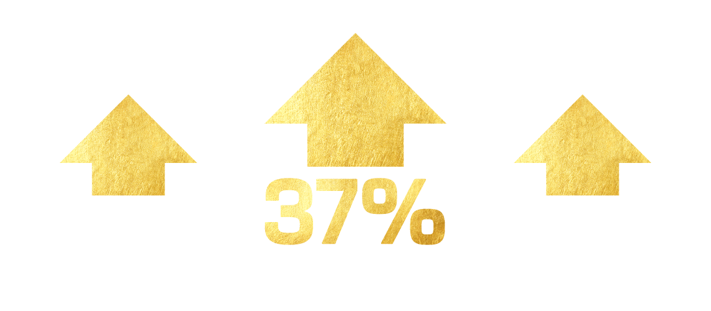
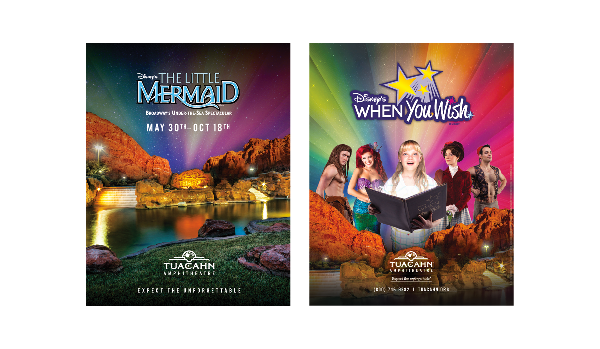

Tuacahn Amphitheater
Tuacahn Amphitheatre hired us in 2013 for a small creative refresh. A couple months after that, they came back for a little more. We started doing their TV and radio buys later that year while acting as a consultant for other buys. The following year, in 2014, we took over their entire marketing budget. We now provide showstopping creative, digital, media and social media services for the popular venue.

The Work
Website Design

Digital Ads

Posters
Billboard